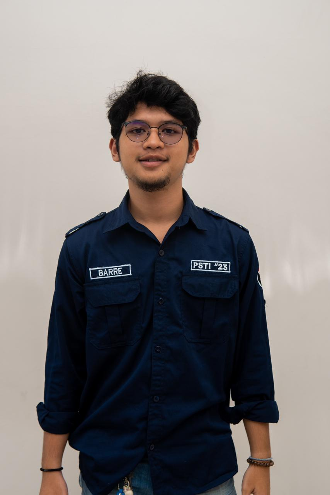
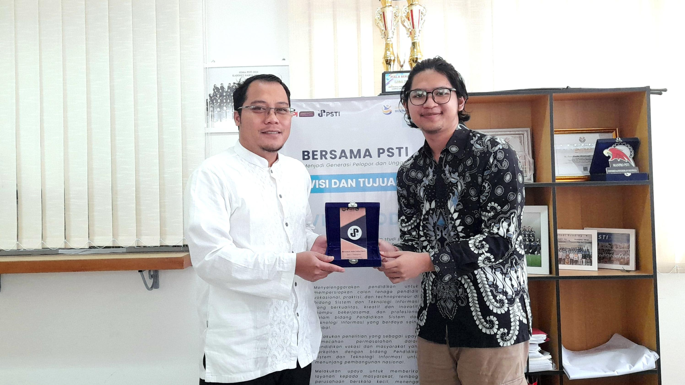
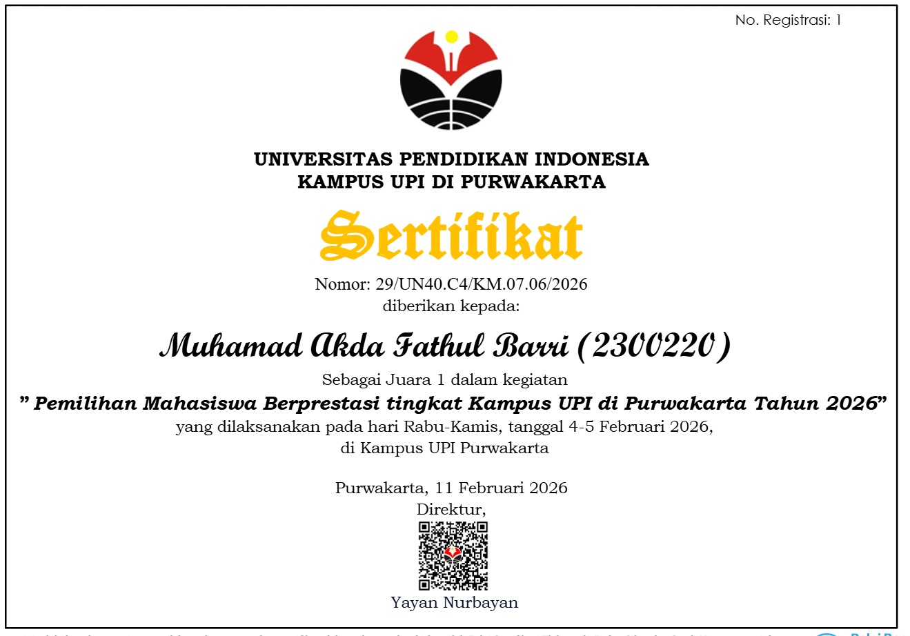
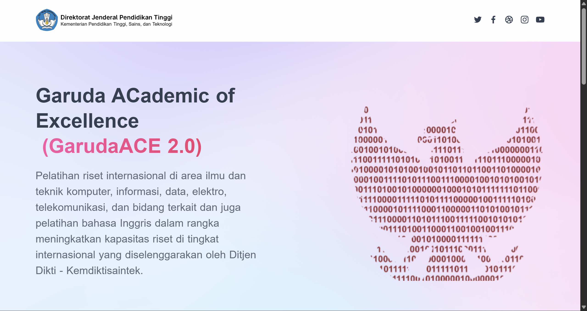
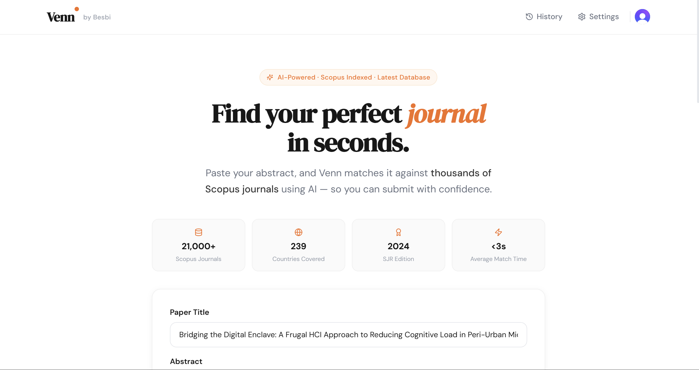
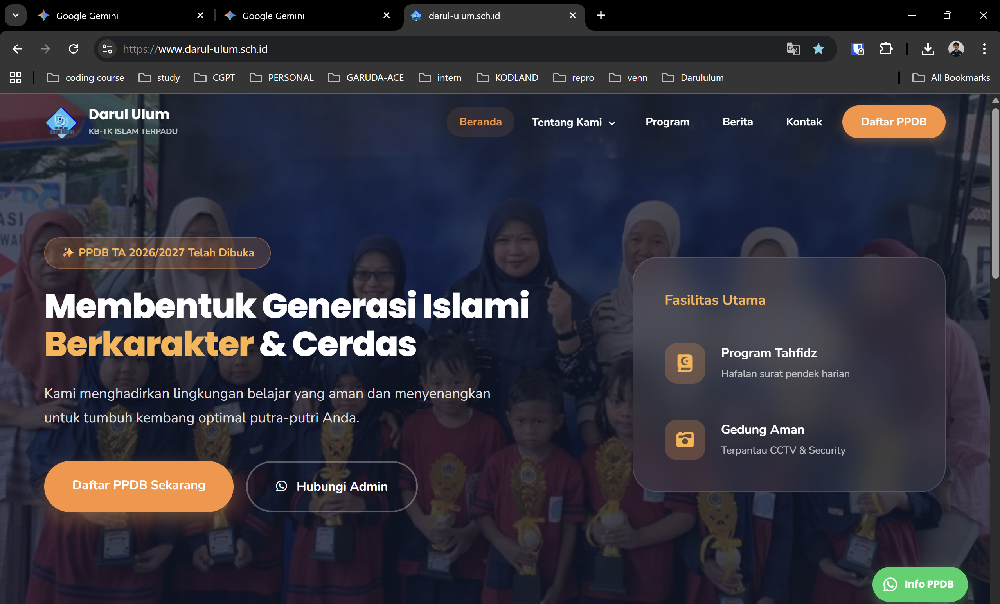
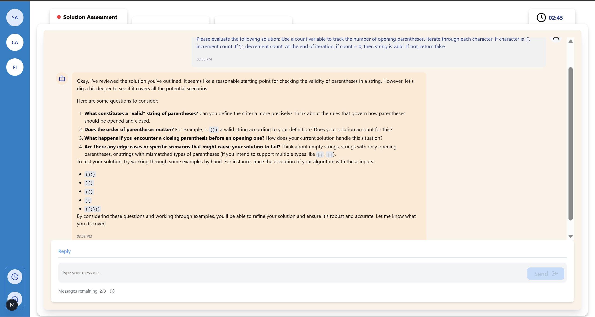
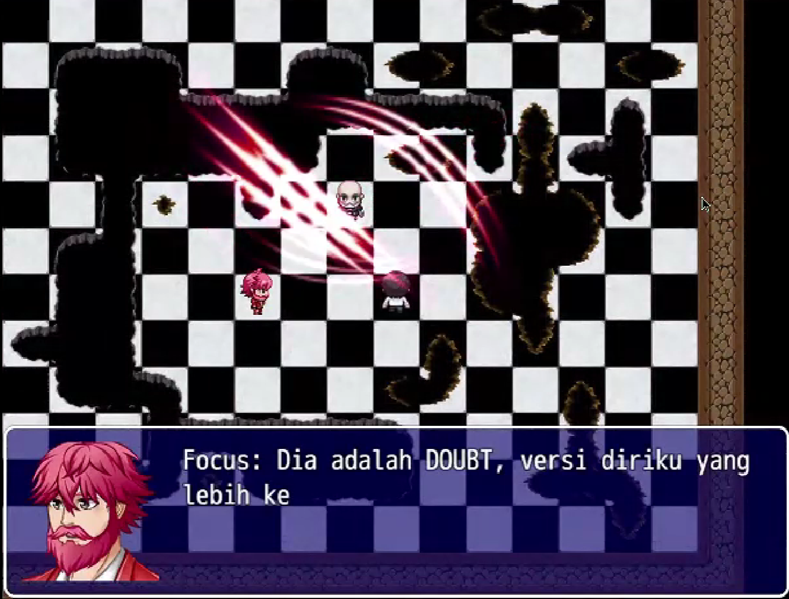

Muhamad Akda Fathul Barri
Hello! I am currently pursuing a Bachelor's degree in Information Systems and Technology Education at the Indonesia University of Education (UPI). Alongside my studies, I work as an Undergraduate Researcher focusing on AI-mediated learning systems under the supervision of Rizki Hikmawan, M.Pd. and Dr. Suprih Widodo, with academic guidance from Nuur Wachid Abdul Majid, M.Pd.
Additionally, I serve as a Teaching Assistant for the Digital Literacy Course at UPI, where I support students in developing their technological competencies. Furthermore, I contribute to research and development, focusing on innovative projects like SEKAPAI and Venn-App that drive educational advancements.
Research Interests: Educational Artificial Intelligence (AIED), Computational Thinking, Human-Computer Interaction (HCI), Intelligent Tutoring Systems, and Assessment-as-Learning.
My motivation is to forge adaptive human-AI collaboration to catalyze holistic learning outcomes, aiming to ensure that technological innovation is grounded in measurable cognitive and epistemic advancements in educational ecosystems.
Find more about my background here [Resume].
Recognition

1st Place Outstanding Student - PSTI Department 2026

1st Place Outstanding Student - UPI Purwakarta Campus 2026

Selected as Top 50 Mentee - GARUDA ACE (CS-UChicago Mentorship)
Research & Experience
- Supported empirical and conceptual research on AI-mediated learning by assisting literature synthesis, data interpretation, and refinement of research questions within computer science education contexts.
- Developed AI-based scaffolding systems for programming education.
- Conducted theory-informed user research to examine learner interaction patterns with AI-assisted educational systems (UpMySkill LMS).
- Mentored over 12+ students weekly in 1-on-1 and group sessions, focusing on Lua scripting and 3D environment mechanics.
- Achieved a 95% project completion rate by simplifying complex programming concepts for diverse age groups.
- Developed AI-driven prototypes for educational technology applications.
- Conducted data analysis to optimize adaptive learning systems.
Selected Projects

An AI-driven research scaffolding system utilizing Multi-Agent RAG. It provides pedagogical scaffolding for undergraduate researchers, bridging methodology synthesis with advanced prompt engineering.

A zero-dependency serverless architecture built with Next.js. Evaluated using ISO 25010 standards, proving superior Performance Efficiency and Green Computing metrics compared to traditional CMS.

Developed an AI-based scaffolding platform comprising 4,000+ LOC, integrating guided prompts and adaptive feedback mechanisms. Successfully tested on 40+ students in problem-solving tasks.

Designed an RPG-based educational game featuring 30+ minutes of gameplay to examine cognitive resilience and decision-making under narrative pressure with 15+ interactive branching scenarios.